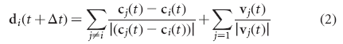

DIRECTION-TOWARDS-OTHERS
Begin NetLogo code:substitute-text-area-for cycle-duration 1
do-every cycle-duration
[ask all-individuals with [distance-between the-personal-space the-local-interaction]
[set my-next-desired-direction
add my-next-desired-direction
unit-vector subtract location myself my-location]]
End NetLogo code
The variable the-personal-space in the above is the value of α in [1]. It can be defined and changed by a slider defined in CREATE-SLIDER-FOR-PERSONAL-SPACE. The variable the-local-interaction is the zone of local interaction or the value of ρ in [1]. It is defined by the slider in CREATE-SLIDER-FOR-LOCAL-INTERACTION.
If you add and abs angle-from-me <= cone-of-vision to distance-between the-personal-space the-local-interaction then only those who are within my cone of vision will be considered. cone-of-vision can be defined by a slider as a variable that ranges from 0 to 180 degrees.
You can change the frequency that this runs by changing the 1.
DIRECTION-TO-AVOID-OTHERS sets my desired direction away from those too close to me. DIRECTION-TO-ALIGN-WITH-OTHERS aligns with those within my local interaction range and INFORMED-DIRECTION implements a preferred direction.
Note that the desired-direction is used by TURN-IN-DIRECTION-AT-MAXIMUM-SPEED to turn me.
DIRECTION-TOWARDS-OTHERS-DELAYED runs this with a delay.
This adds a vector to me from each of the others whose distance is between the the-personal-space and the-local-interaction. It implements part of equation 2 in [1].

This was implemented by Ken Kahn.
[1] Couzin, I.D., Krause, J., Franks, N.R. & Levin, S.A.(2005) Effective leadership and decision making in animal groups on the move Nature 433, 513-516.